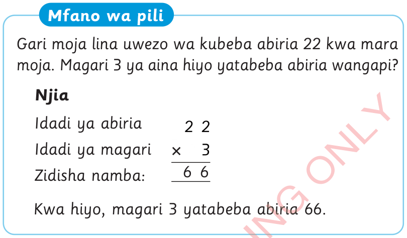
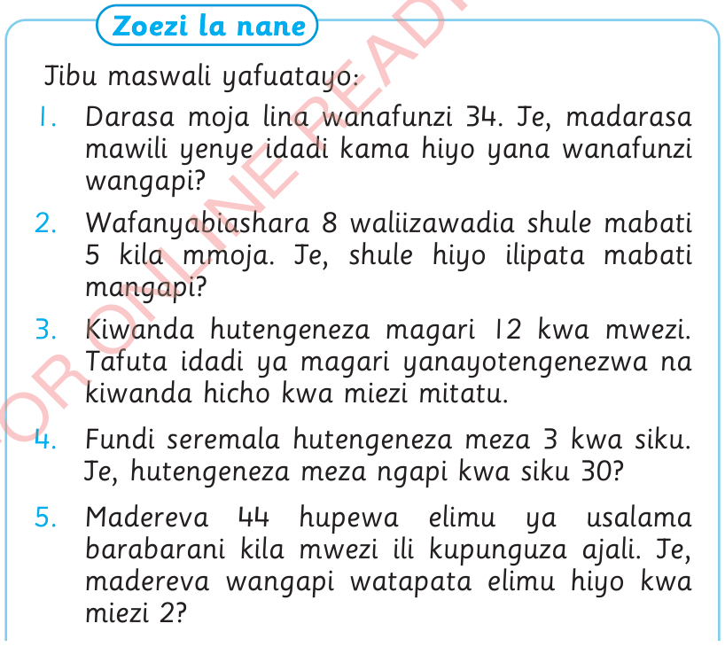

Mfano wa pili
Gari moja lina uwezo wa kubeba abiria 22 kwa mara moja. Magari 3 ya aina hiyo yatabeba abiria wangapi?
Njia
Idadi ya abiria
22
Idadi ya magari
Zidisha namba:
66
Kwa hiyo, magari 3 yatabeba abiria 66.

Zoezi la nane
Jibu maswali yafuatayo:
1.
Darasa moja lina wanafunzi 34. Je, madarasa mawili yenye idadi kama hiyo yana wanafunzi wangapi?
2.
Wafanyabiashara 8 waliizawadia shule mabati 5 kila mmoja. Je, shule hiyo ilipata mabati mangapi?
3.
Kiwanda hutengeneza magari 12 kwa mwezi. Tafuta idadi ya magari yanayotengenezwa na kiwanda hicho kwa miezi mitatu.
4.
Fundi seremala hutengeneza meza 3 kwa siku. Je, hutengeneza meza ngapi kwa siku 30?
5.
Madereva 44 hupewa elimu ya usalama barabarani kila mwezi ili kupunguza ajali. Je, madereva wangapi watapata elimu hiyo kwa miezi 2?
Kuhesabu Std 2 SEPT 2024.indd 88
07/11/2024 08:44